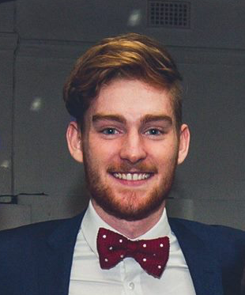

James E. Licciardi
(+61) 0423 554 605
South Tce, Adelaide
James Licciardi
Electrical and Electronic Engineer
About me I am currently in my fourth year of studies at The University of Adelaide, undergoing a Bachelor of Electrical and Electronic Engineering with a second major in Computer Sciences.
I am extremely interested in the up and coming Electric Vehicle (EV) market and I have made a few vehicles myself (See Website).
Experience
Aug 2015 - present, Edinburgh Hotel & Cellars
Working as a gaming machine attendant, I am certified to manage the room by myself and I have more than 3 years experience behind the bar, with experience in food preparation, serving coffee and strengthening customer relationships. l went above and beyond with my position - monitoring customer data and profit time-lines (Utilising self developed excel spreadsheets), to enhance customer’s experience and hotel profit.
Jan 2015 - Sept 2017, GA Entertainment (Bar/Stock)
Stocking bars and ensuring events run smoothly by effectively working in a team based environment. This experience taught me to learn quickly and ’on the fly’ and I was commended for my efforts of self-organisation and leadership by multiple exxperienced staff members.
Oct 2012 - July 2016, Adelaide Computer Technology (IT)
Customer service based information technology company with clients expanding across South Australia. Working with co-workers to build new machines, troubleshoot issues within closed and open networks, installing software upgrades and ensuring backup systems were in place and functional. In some instances employing backups, restoring systems after infiltration.
Other Work Experience
2
Woolworths (Produce)
Mercedes College (Tutor)
WOMAD (Bar)
Mercedes College (Coach)
Education
2015 - present, The University of Adelaide
Computer Sciences
2017 - 2018, The University of British Columbia (Canada)
Electrical & Electronic Engineering
Computer Sciences
2002 - 2014, Mercedes College [ATAR: 97.5]
International Baccalaureate Diploma (IB)
Higher Level Physics, Mathematics, Chemistry, Economics
French, English
Skills
Platforms
3
macOS
Linux
Windows
Languages/Programs
3
C+ / C / C#
Latex / Markdown
Microsoft Office
HTML / CSS
JavaScript / PHP / jQuery
Apache / MySQL
GIT / SVN
Java
Python
MATLAB
Trello / Slack
Hobbies & Achievements
Engineering & Technology
2
Electric Vehicles
Automation
Energy Management
Phone/Electronic Repairs
Arduino Projects
General Coding
Server Maintenance
Web Programming
Sport & Music
3
High-Jump
Volleyball
Piano
Guitar
References
Edinbugh Hotel & Cellars
Alison James (Hotel Manager) - 0409 117 295
Phil Chrysotomou (Manager) - 0430 430 437
Adelaide Computer Technology
John Liambis (Manager) - 0419 220 600
Jim Liambis - 0417 400 765
Woolworths Mitcham
Rino Spagnuolo (Manager) - 0412 197 289
Nicole Trigg - 0410 064 824
GA Entertainment
Kim Littler (HR) - kim.e.littler@gmail.com